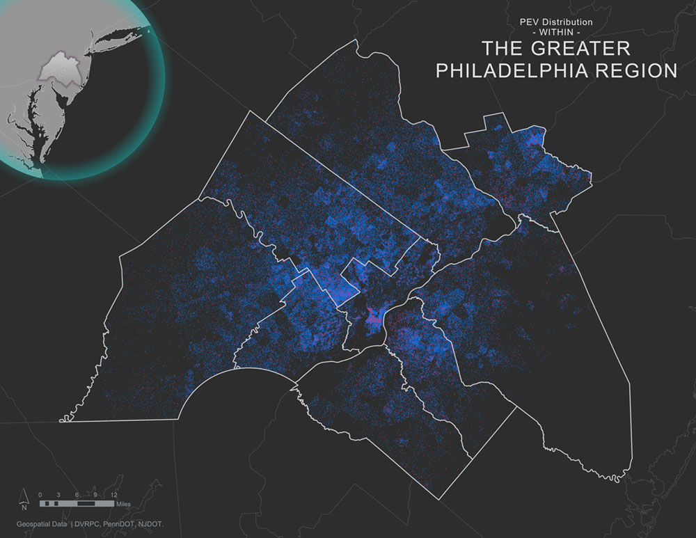
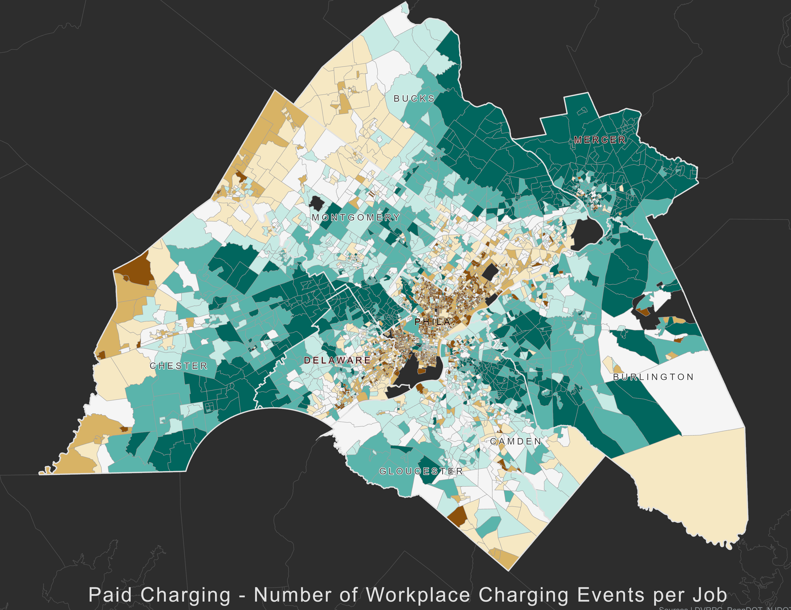

Mapping Vehicle Distribution and Workplace Charging Demand
DVRPC in collaboration with the PH&EV Research Center at UC Davis
To begin planning for Electric Vehicles (EVs), a community must know where the owners of EVs will live, work, and charge. According to the International Center for Clean Transportation, the vast majority of EV charging in the U.S. currently occurs at the owner's home or workplace, and this trend is expected to continue as EV use increases. To learn more about EV charging infrastructure, feel free to visit the Delaware Valley Regional Planning Commission's (DVRPC) Alternative Fuel Vehicles webpage.
In order to assist our planning partners, the DVRPC partnered with Plug-In & Hybrid Electric Vehicle Research Center at the University of California, Davis, to provide detailed projections of where EV owners will live and how much demand there will be for workplace charging. UC Davis previously developed a suite of GIS tools to aid EV planning for Metropolitan Planning Organizations (MPOs) in California. Over the past several years, DVRPC has been working with UC Davis researchers to calibrate their Electric Vehicle Planning Toolkit to the Greater Philadelphia region. The Toolkit is run in ArcGIS and allows users to project where EV owners will live, work, and charge.
The Toolkit produces predictions of the spatial distribution of Plug-In Electric Vehicles (PEVs) and the associated workplace charging demand of those vehicles at the census block group level. The calculations are based on the current (June 2021) distribution of PEVs from the Pennsylvania Department of Transportation (PennDOT) and the New Jersey Motor Vehicle Commission (NJ MVC) via the New Jersey Department of Environmental Protection (NJ DEP); demographic data from the 2015-2019 American Community Survey (ACS) 5-year summaries; commuting data from Longitudinal Employer-Household Dynamics (LEHD) Origin-Destination Employment Statistics (LODES), version 7; and commuting distances between block groups from DVRPC's Travel Demand Model. For more information on the Toolkit, please see a one-page summary of the Toolkit, the Toolkit instruction manuals (Market Analysis Tool and Workplace Charging Analysis Tool), or visit the project site on the UC Davis website.
The following series of maps show interactive results of the geographic distribution of PEVs and the associated demand for workplace charging calculated by the calibrated DVRPC/UC Davis EV Planning Toolkit for ArcGIS (the Toolkit). These results reflect the following PEV penetration scenarios:
- DVRPC Region: 5 percent of passenger vehicles (or about 200,000 vehicles) are PEVs;
- Pennsylvania: 5 percent of passenger vehicles (or about 400,000 vehicles) are PEVs;
- New Jersey: 330,000 passenger vehicles (about 10 percent) are PEVs. This is in line with the New Jersey, state-wide, zero-emission vehicle adoption goal for 2025. However, this tool does not predict the total number of passenger vehicles in 2025.
DVRPC considered using projections based on planning horizon. However, there is a wide variation in the projections available, and there is no one "official" projection. In addition, these projections are generally at a much larger geography than the DVRPC region, Pennsylvania, or New Jersey. DVRPC consulted Pennsylvania and New Jersey officials working on EVs. Pennsylvania suggested that we use a 5 percent PEV penetration. New Jersey suggested that we use their 2025 goal of 330,000 PEVs. DVRPC chose to use 5 percent PEV penetration for the region, with no estimated date for when this will be reached.
Plug-in Electric Vehicle (PEV) Distribution
PEV Distribution shows layers for current and projected numbers of PEVs at the census block group and municipal levels. The municipal PEV counts were aggregated from the census block group counts, assigning the counts from each block group to the municipality housing that block group's centroid. The projected percentage of PEVs per municipality and block group are purely based on the penetration of PEVs and do not account for any increase in the total passenger vehicle fleet.
Current and projected numbers of PEVs are of great value in planning for the increasing adoption of PEVs. Electric Distribution Companies (EDCs) can use this information to inform where infrastructure upgrades may need to be made. Municipalities and counties can use this information to inform decisions on permitting processes that may help future PEV owners more easily install charging infrastructure in their homes. They may also see certain block groups that could benefit from PEV parking allowances or other mechanisms to ensure parking infrastructure for EV owners, such as requiring multi-family residences to include a certain number of PEV parking spaces with charging.
Workplace Charging Demand
Workplace Charging Demand shows layers depicting workplace charging demand in number of charging events and kWh of demand by census block group for the following two scenarios:
- workplace charging is free (free charging),
- workplace charging is twice the cost of home charging (expensive charging).
These two scenarios allow users to see how pricing the cost of charging can influence demand at the workplace. In general, the lower the cost of charging, the more demand for charging there will be. A business may only have enough capital or space to install a certain number of chargers. Looking at the scenarios can help the business determine how aggressively to price charging for its employees based on the expected demand for each price point.
This analysis is useful for employers who may be looking to build a new parking facility or for new employers to an area. It can also inform employers on how best to charge for the electricity that will be used by the vehicles. If an employer has already established EV charging, this analysis could help to price it so that the infrastructure is not overburdened.
Additionally, this could help inform municipalities on how much EV parking they may want to require for businesses in future zoning code updates or Electric Distribution Companies (EDCs) that are looking into infrastructure upgrades and need to know how much power will be drawn in an area.
If you have any questions regarding these maps or wish to access the GIS datasets used in the analysis, please contact:
Sean Greene
Manager, Air Quality Programs | sgreene@dvrpc.org | (215) 238-2860
To obtain your own copy of UC Davis's EV Planning Toolkit and supporting documentation, please contact:
Gil Tal
PhD | gtal@ucdavis.edu | https://phev.ucdavis.edu/
Datasets Used in Analysis
- 2021 vehicle registration data provided by the Pennsylvania Department of Transportation
- 2021 vehicle registration data from the New Jersey Motor Vehicle Commission provided by the New Jersey Department of Environmental Protection
- 2015-2019 American Community Survey 5-year Estimates
- LEHD Origin-Destination Employment Statistics (LODES), version 7
- Block group-to-block group commuting distances from DVRPC's Travel Improvement Model 2.1, accessed December 2017.
- Block group-to-block group commuting distances calculated from Esri's ArcGIS Network Analyst, used in 2017.
Glossary of Terms
- ACS: American Community Survey. The ACS is an ongoing survey updated annually by the U.S. Census Bureau. It regularly gathers information previously contained only in the long form of the decennial census, such as ancestry, citizenship, educational attainment, income, language proficiency, migration, disability, employment, and housing characteristics.
- AEV: All-Electric Vehicle. An alternate term for BEV.
- Census Block: The smallest geographic area for which the Census Bureau collects and tabulates decennial census data.
- Census Block Group: A combination of census blocks that is a subdivision of a census tract. The Block Group is the smallest geographic entity for which the decennial census tabulates and publishes the sample data (socioeconomic information).
- Charging Event: The act of plugging-in a PEV to charge the battery.
- EDC: Electric Distribution Company. The public utility that provides facilities for the transmission and distribution of electricity to retail customers. Electric distribution companies are regulated by state utility commissions. Exceptions include building or facility owners or operators that manage their internal distribution system and supply electric power and electric services to occupants of the building or facility.
- EV: A generic term for a vehicle that gets some or all of its power from an electric motor. Sometimes used to mean PEV, BEV, or AEV (and occasionally HEV).
- GIS: Geographic Information System. A Geographic Information System is a system designed to capture, store, manipulate, analyze, manage, and present spatial or geographic data. GIS applications are tools that allow users to create interactive queries, analyze spatial information, edit data in maps, and present the results of all these operations. Esri's ArcGIS is a popular GIS software application.
- HEV: Hybrid Electric Vehicle. HEVs are vehicles that do not plug in, but have a large battery on board that is charged by the vehicle's braking. The energy stored by this battery assists the ICE in moving the car, significantly improving the gas mileage. Current examples include the Toyota Prius and Honda Accord Hybrid.
- ICE: Internal Combustion Engine. Gasoline and diesel cars and trucks use an internal combustion engine to convert fuel to the motion that moves the vehicle. Propane or compressed natural gas are used in some ICE vehicles as well.
- kWh: Kilowatt-hour. A measure of electrical energy equivalent to a power consumption of 1,000 watts (about what a hand-held hair dryer uses) for 1 hour. It is the standard unit of measurement to describe PEV battery capacities and the amount of electricity transferred to the battery during charging.
- LEHD: Longitudinal Employer-Household Dynamics.
- LODES: Longitudinal Employer-Household Dynamics (LEHD) Origin-Destination Employment Statistics. LODES Data provides detailed spatial distributions of workers' employment and residential locations and the relation between the two at the Census Block level. LODES also provides characteristic detail on age, earnings, industry distributions, and local workforce indicators.
- MPO: Metropolitan Planning Organization.
- Municipality: A city, township, or borough.
- PHEV: Plug-in Hybrid Electric Vehicle. PHEVs use both an ICE and an electric motor with a battery that recharges by plugging into an external source. Depending on its exact configuration, the PHEV's battery can either assist the ICE, or fully power the vehicle until the battery has been discharged, at which time the vehicle continues to operate as an HEV. A current example is the Toyota Prius Prime.
- PEV: Plug-in Electric Vehicle. An EV that plugs into an external source to charge an on-board battery that provides the electricity for the electric motor. Some EVs, such as trollies, subways, trains, and trolley buses, are powered by external electricity, from overhead wires or a track. Others are powered by fuel cells (FCEVs). These are not covered in this document, which addresses only PEVs.